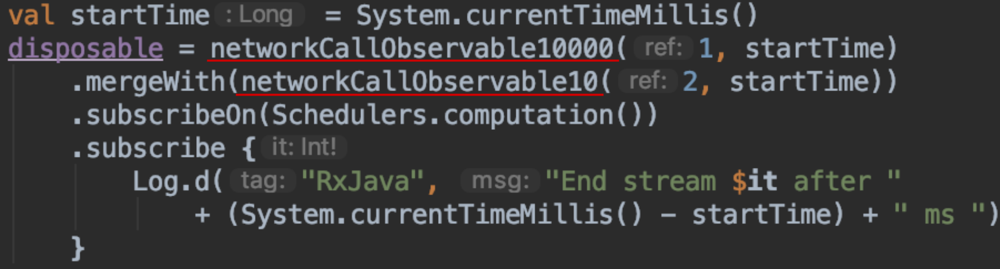
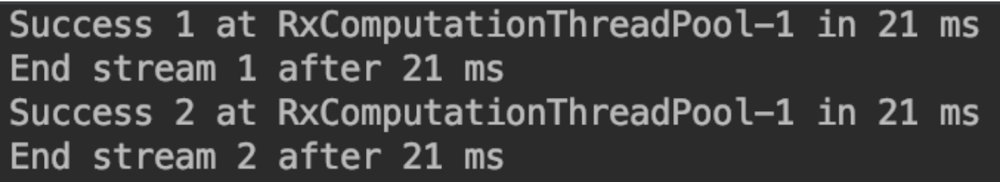
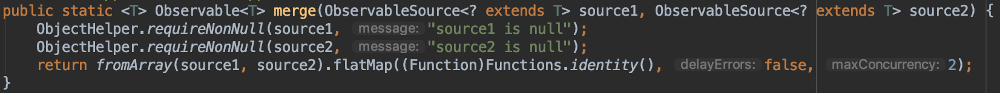
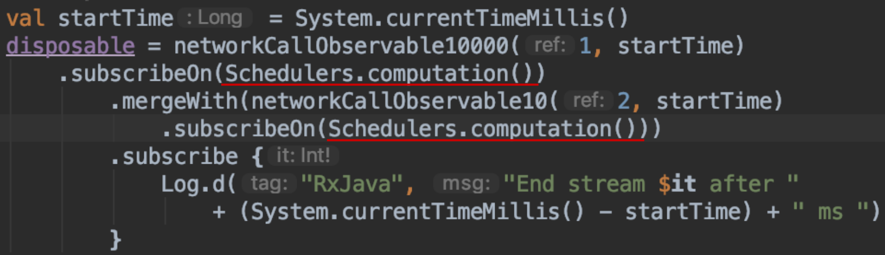
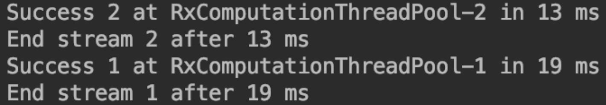
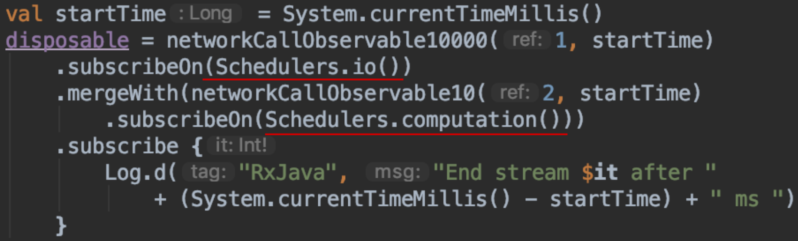
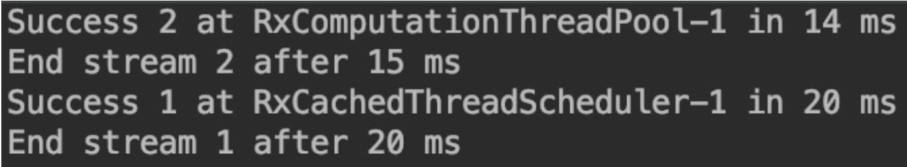

If you use RxJava as the primary library for handling multi-thread tasks. You must have many cases that will need to fetch the data from different sources and receive the result with a single downstream.
In this case, we may use mergeWith. That’s saying we got two upstreams, and the first one should run longer than the second one:

We also want them to run asynchronizely, so we can get a result as soon as possible. However, since we call subscribeOn() on mergeWith(), we simply force the two upstreams will be run on the main thread. Means the two upstream will be trigger synchronized, just like the result below:

The second one need to wait for the first one to complete, which is quite opposite to what we expect.
Why
According to the introduction on the official document: subscribeOn is used to control on which thread that the upstream submit the data. And also, mergeWith() will merge two upstream into one:

So if we use subscribeOn() after mergeWith(), we just decide on which thread that mergeWith() pass the data, and all the upstreams merged with mergeWith().
How
We can solve it by call subscribeOn() on each upstream:

Since Computation Scheduler has a thread pool to control the thread. Both upstreams will be run on different threads. Hence the result will be:

Now we can get the result from the second upstream immediately and don’t need to wait for the first one.
What’s more
Use Schadulers
The next question is will it be better to use different Scheduler?

The result will change to:

As you can see, the result shows it may not be a better idea, since getting the thread from scheduler may consume more time.
Other merging methods
Actually, for the other operators, like combineLatest() or zip(), which can also be used to merge streams. If you wish the upstream to run synchronized, you also need to aware of this caveat.